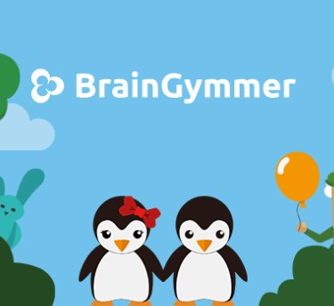
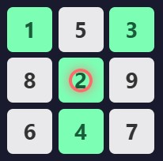

Brain Gymmer:

About the Game:
Link:
BrainGymmerReview:
BrainGymmer offers a fun and interactive way to engage in brain training, with a variety of games designed to challenge cognitive skills. However, potential users should be aware of the ongoing debate regarding the effectiveness of brain training apps and consider their own goals and expectations when using such platforms. As always, maintaining a healthy lifestyle with physical activity, proper nutrition, and social interaction is crucial for overall cognitive health.
Mind Skills Arcade:
About the Game:
Link:
Mind Skills ArcadeReview:
Mind Skills Arcade has received mixed reviews from users. While many appreciate the fun and engaging nature of the games, some users have reported technical difficulties and a frustrating user interface. The games are generally well-received for their ability to provide a personalized and enjoyable brain workout, but there are areas for improvement, such as better support for mobile devices and a more user-friendly app. Overall, Mind Skills Arcade is seen as a valuable tool for maintaining cognitive health, especially for those looking for a quick and enjoyable way to train their minds.
Cognitive Train:

About the Game:
Link:
Cognitive TrainReview:
Cognitivetrain.com has been reviewed as a legitimate website with a good trust score of 69/100, indicating it appears safe to use. The website uses WordPress CMS and Google Tag Manager for tracking purposes. It is important to verify the authenticity of any website before making purchases or sharing personal information. The website's recent registration and lack of established reputation metrics suggest that it may require special attention for users.